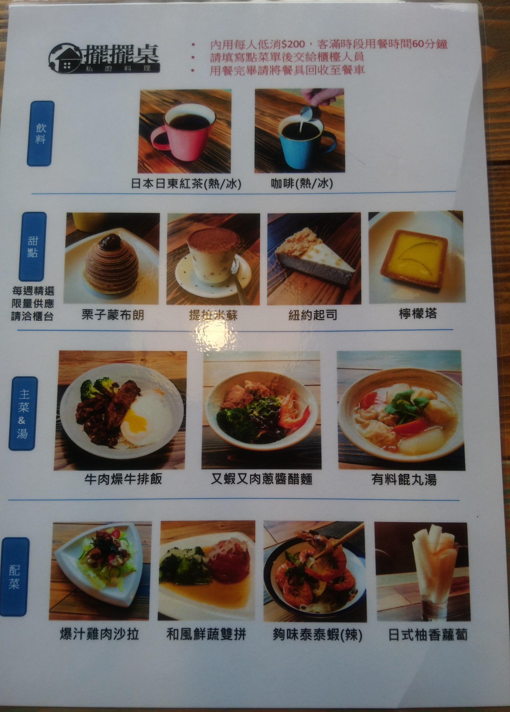
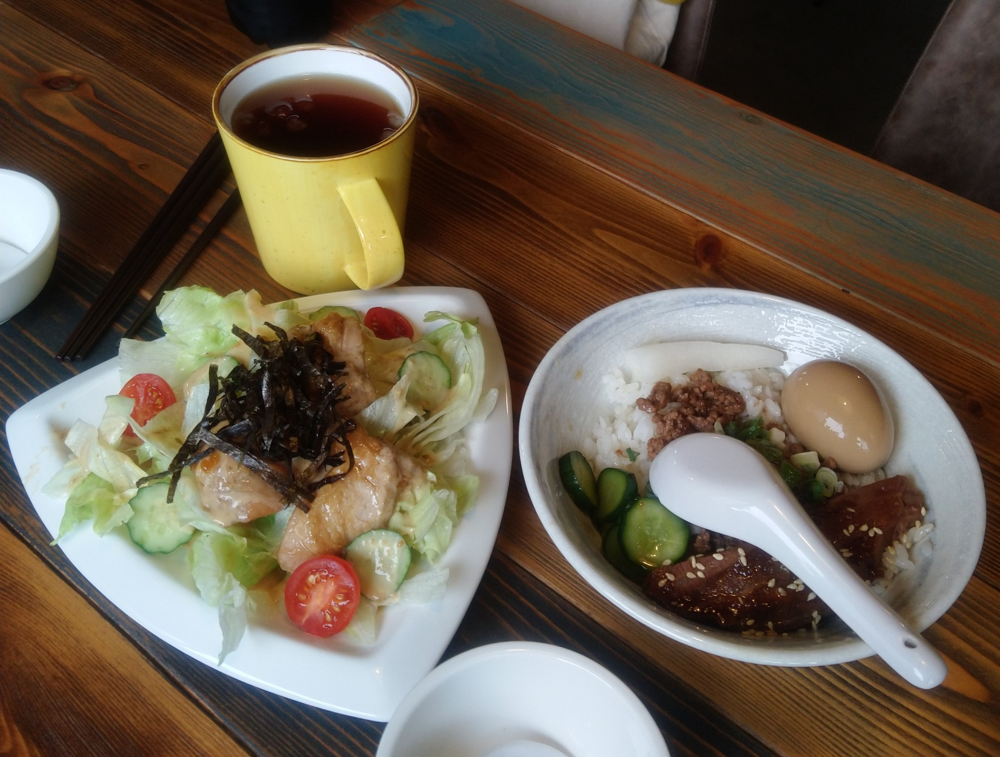
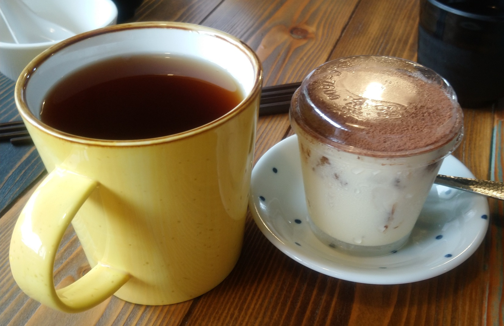
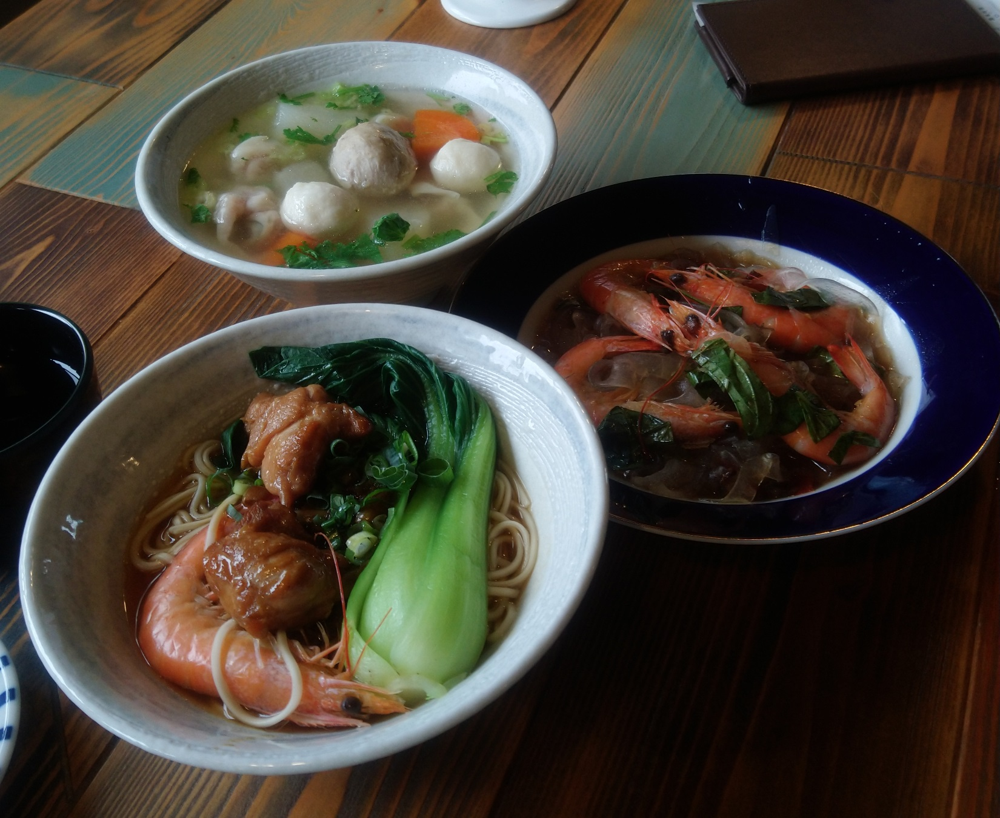

[關西] 擺擺桌私廚料理餐廳
擺擺桌私廚料理餐廳 是 新竹縣關西鎮已經成名一陣子的餐廳， 本來是無菜單料理，最近轉型成單點式的餐廳，每道菜，飲料，甜點 都是100，不收服務費，計算價格非常方便。菜單似乎常常更新。
這家餐廳位於關西外圍靠近 坪林堤防 附近，周圍景色蠻田園的。 訪客幾乎都是開車來的，停車沿著河堤停，很好停。 餐廳後方大概是住家，本身大概只有一兩個車位，當然就是店主人自己停囉。
餐廳主體是一間鐵皮屋，外觀是普通，可是推開門進去，竟然裝潢 蠻現代的，挺好的。我個人剛好就是討厭那種很復古的裝潢，特別是那種爛爛 的房子，擺爛爛的家具，坐在裡面就覺得煩，要是真喜歡，那就去變得很窮啊， 自然就會住到類似房子，天天與舊房子為伍。不過今天趕著吃飯，忘了拍裝潢， 各位可以去參考別人寫的blog。
今日菜單如下: 
左邊是爆汁雞肉沙拉，右邊是牛肉燥牛排飯。精緻度是有啦，肉燥飯為了 收到100元，加一塊牛排肉，加一顆滷蛋，滷蛋滷成溫泉蛋，處處可見 用心，加上觀光價值，算是值得啦。 
左邊是冰日本日東紅茶，右邊是提拉米蘇。唉，冰日本日東紅茶是本人 今日的大失策，這個紅茶是好喝，感覺得出來用料很好，感覺不出日本， 而且隔壁峨眉鄉就有優秀的東方美人茶了，何必捨近求遠。為了做到100元 的質感，硬扯日本，太扯了。
提拉米蘇很正常，加上觀光價值，算是符合100元。服務生水準不夠， 收到單，就拼命上，飯後甜點 沒問過客人，就先上了。不過在這 荒郊野外，價格也很平實，就不用計較這個問題了。 
右邊是 夠味泰泰蝦(辣)，上面是有料飩丸湯，下面是 又蝦又肉蔥醋醬麵。 這些菜名混了一些文青味，俗話說，文青別鬼扯，食物好不好吃，當然跟 菜名無關。這三道菜，反正加肉加蝦加料到符合100元的質感，味道 還行。 
擺擺桌私廚料理餐廳 新推出的單點的方式不錯，想吃什麼就點什麼， 食物的精緻度 比 普通小吃店好很多，加上田園風景， 順道經過時，是可以來吃一下。